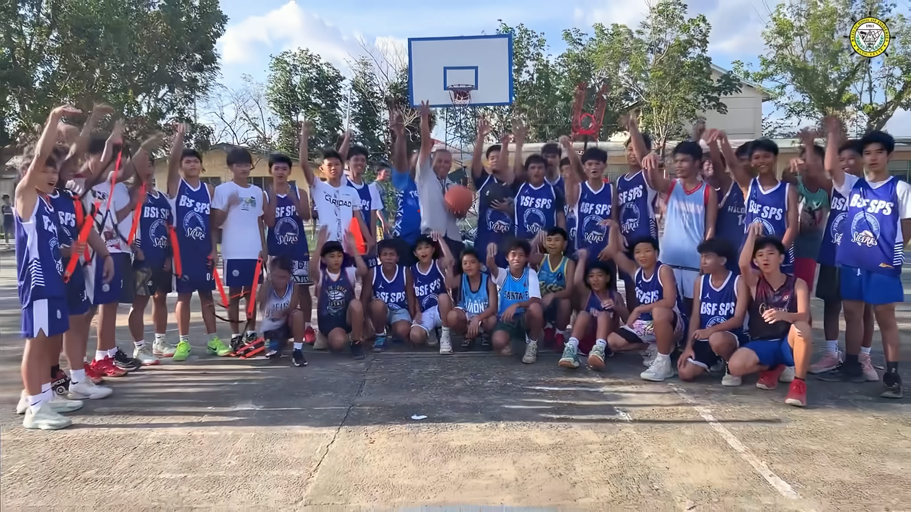
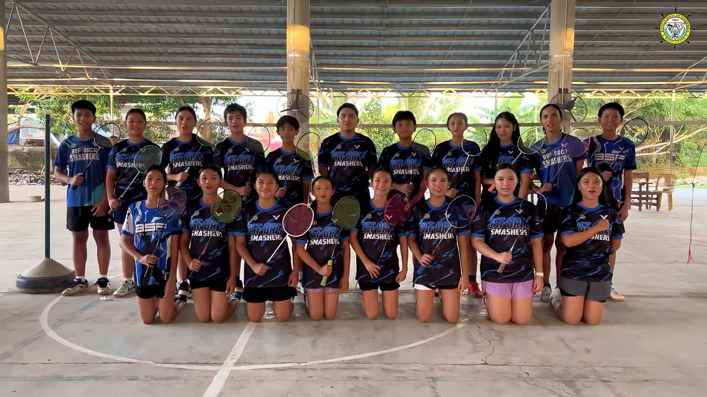
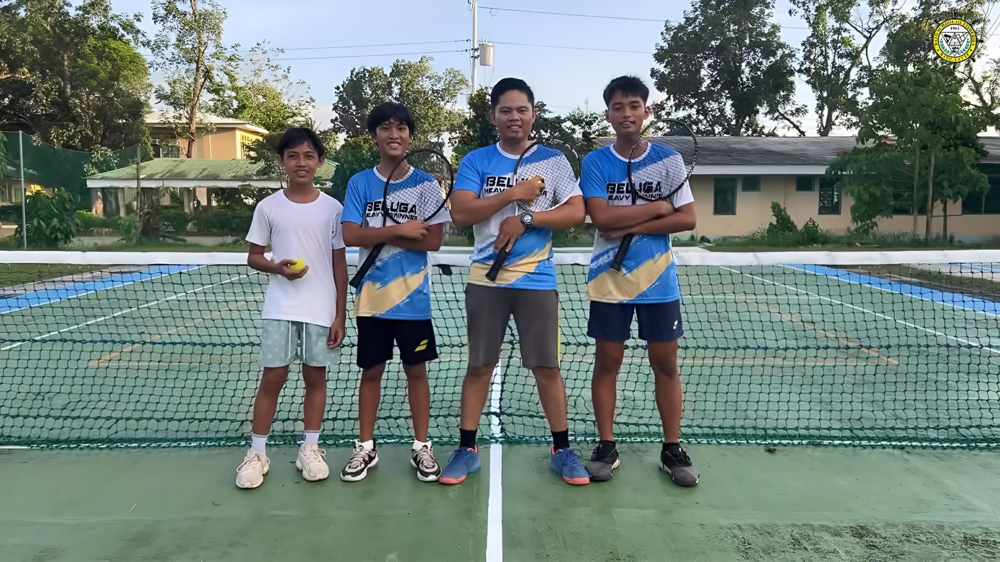
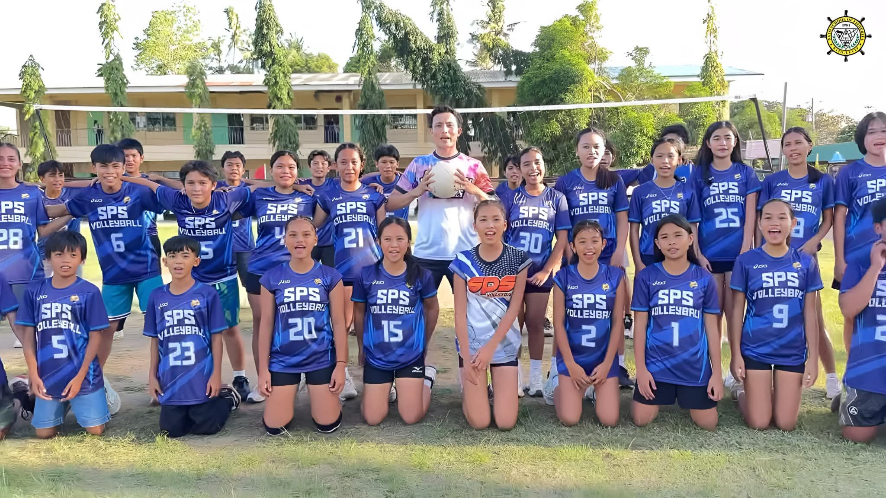

Special Program in Sports
Champions forged through teamwork, discipline, and heart.
About the Sports Program
The Special Program in Sports (SPS) develops student-athletes who excel both on the field and in the classroom. We offer 8 sports disciplines for Junior High School students.
Athletics
Track and field events developing speed, strength, and endurance.
Badminton
Improves reflexes, agility, and hand-eye coordination through fast-paced rallies.
Baseball
Develops focus, strategy, and teamwork in a competitive setting.
Softball
Similar to baseball but with a larger ball and underhand pitching, emphasizing teamwork and strategy.
Basketball
Builds teamwork, coordination, and endurance through fast-paced play.
Table Tennis
Sharpens reaction time, focus, and precision through competitive rallies.
Tennis
Builds agility, endurance, and individual competitive skills.
Volleyball
Develops teamwork, communication, and coordination through dynamic court play.
SPS Athletes
Meet our student-athletes as they train, compete, and excel in different sports.

Builds teamwork, agility, and quick decision-making.

Enhances coordination, precision, and teamwork.

Improves speed, reflexes, and accuracy.

Sharpens reaction time, focus, and precision.

Builds agility, endurance, and individual competitive skills.

Develops teamwork, communication, and coordination.